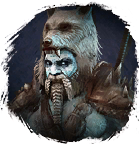
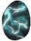

Открыть в интерактивной вики →
| Уровень | 115 |
|---|---|
| Сила (PvE) | 4749 |
| Аспект арены | Hegun |
| Здоровье | 4600 |
| Мана | 1000 |
| Выносливость | 6000 |
Локация
Дроп

 (20-60)
(20-60) 
Душа Ворлинга Большие фляги
Большие фляги| Предметы | Синергетики | Эпики | |||
 Душа Ворлинга Душа Ворлинга Фляги улучшений Фляги улучшений | 20-60 ур. |  Эпики Эпики |
Умения
- Критический Удар — укус удар головой таран
- Толстокожесть — боевой клич заражение ярость рёв